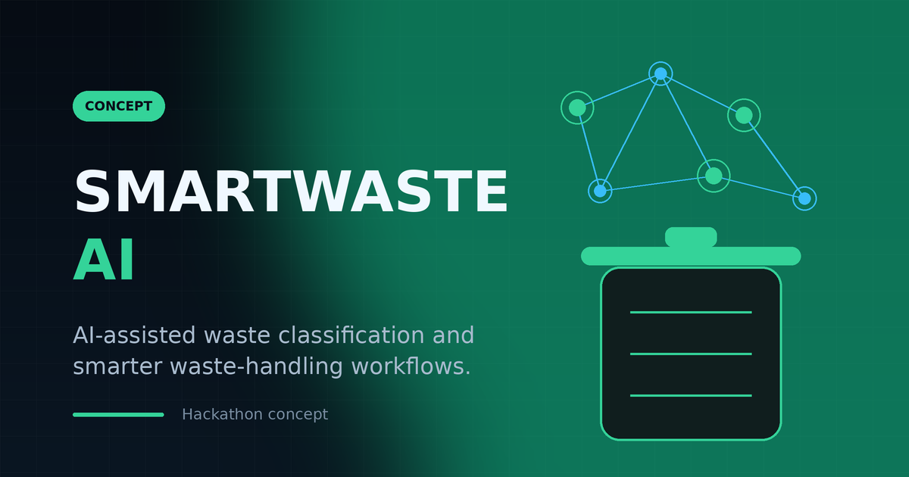

Image-based classification
A photo of an item is classified into the correct waste stream, so sorting starts right at the point of disposal.
SMARTWASTE AI is a concept for using computer vision to classify waste automatically — so sorting starts correctly at the point of disposal, and the data that comes out of it can make collection and handling smarter.

Most waste ends up mixed, because deciding what goes where is left to the person holding it — quickly, and without feedback. SMARTWASTE AI explores the opposite: a camera classifies an item in the moment, tells the user which stream it belongs to, and quietly records what is being thrown away. That classification is the input for everything downstream, from routing to reporting.
There is no working prototype in this repository yet. The page describes the intended design and the problem it aims at.
Four capabilities the concept is built around.
A photo of an item is classified into the correct waste stream, so sorting starts right at the point of disposal.
Classification feeds routing and collection decisions, instead of leaving them to manual judgement.
Aggregated results show what is being thrown away, and where — useful for planning and awareness.
Designed around an ordinary phone camera, so it needs no special hardware to be useful.
The intended flow, from the moment something is captured to the moment a decision is made.
A photo of the item is taken with a phone camera.
A vision model assigns it to a waste stream.
The classification drives the correct handling path.
Results aggregate into data for planning.
The project is at the concept stage. Nothing here is presented as finished work.